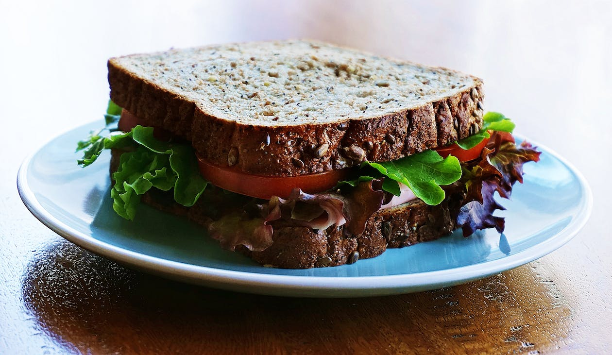
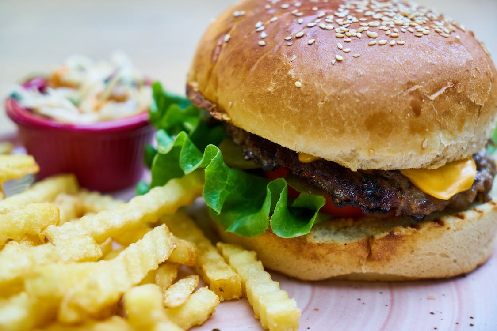
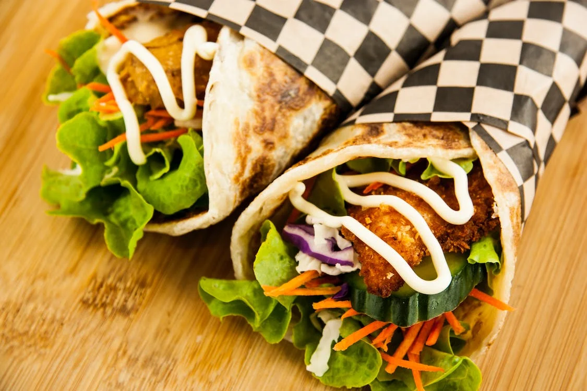
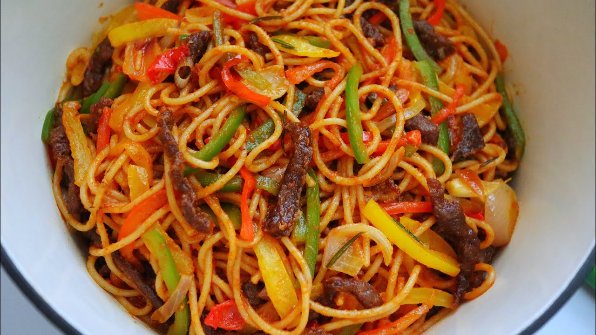
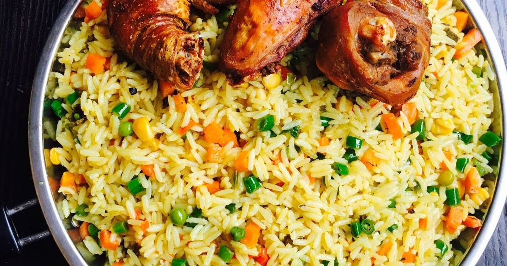
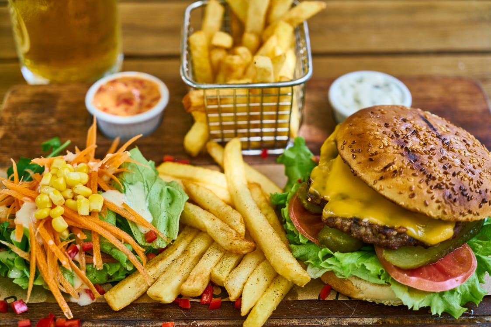

Menu
Pizza
Nothing beats a fresh-out-of-the-oven pizza, and once you see how easy it is to make for yourself, you'll never order delivery again. Switch up the toppings and add your favorites to make it your own. Pepperoni, mushrooms, bell peppers, pineapple? You can have it all! We can't get enough of Bacon Pickle Pizza, personally.....
Read moreSandwich
There’s nothing wrong with a classic, simple peanut butter (or sunflower seed butter) and jelly or turkey sandwich, but if you’re looking for other options or simple ways to change those up, these ideas will help.....
Read moreHamburger
You can search the web and find all sorts of burger recipes, but when it comes to making a classic, no-frills, juicy hamburger, all you need is good quality meat, and a good burger seasoning. There’s no need for fillers like eggs or breadcrumbs. I’ll walk you through the simple steps to how to prepare, season, and cook the burgers, plus make-ahead and freezing instructions.....
Read moreJollof Rice
Nigerian Jollof Rice or Jellof rice is a rich and incredibly tasty west African one-pot Meal. It is a very versatile dish, and it is usually made from scratch using Rice, Tomatoes, Pimento peppers, Tomato paste, Scotch bonnet, Onions, Salt, and other spices. Jollof Rice....
Read moreShawarma
I made this grilled chicken shawarma with the intention of making these sandwich wraps, but then I started topping salads with it and eventually just snacked on the chicken plain. It’s just that good. You could really use this flavorful chicken for anything......
Read moreSpaghetti
Speedy spicy spaghetti arrabbiata is a quick pasta dinner harnessing the flavor of dried herbs, fresh garlic, and a sweet kick of balsamic vinegar. This simple arrabbiata sauce recipe is also versatile. With a few modifications, you can make multiple pasta dishes using the same quick method....
Read moreTaco

Ever wondered how to make simple ground beef tacos that are as good as the ones you enjoy at your local taqueria? This Easy Beef Tacos recipe is your answer. With just six ingredients and 30 minutes of your time, you can serve up ten delicious yet simple beef tacos. by Betty Crocker Kitchens Updated Nov 19, 2021....
Read moreTasty Doughnut

Assorted donuts in a box. (Shutterstock Photo) Assorted donuts in a box. (Shutterstock Photo) Baked or fried? Usually, when we talk about doughnuts we are referring to the fried version, but not everyone can handle their heavy nature. For those looking for a close, lighter substitute, there are indeed baked versions that taste just as good. The fried Let’s start as basic as it gets, a fried doughnut dusted in sugar. Nothing fancy, just simple goodness.....
Read moreFried Rice
Nigerian Fried Rice is a very simple yet delicious recipe. This version relies on a ton of fresh vegetables, Beef Liver, and a little bit of oil for crisping it up. Close up picture of the delicious Nigerian Fried Rice loaded with mixed vegetables and beef Liver......
Read moreFrench Fries
The fries boiled in plain water disintegrated, making them nearly impossible to pick up. When I added them to the hot oil, they broke apart even further. On the other hand, those boiled in the vinegared water remained perfectly intact, even after boiling for a full ten minutes......
Read moreGallery
Sandwich
Jollof rice and chicken
Pizza
Hamburger
Sharwama
French fries
Taco